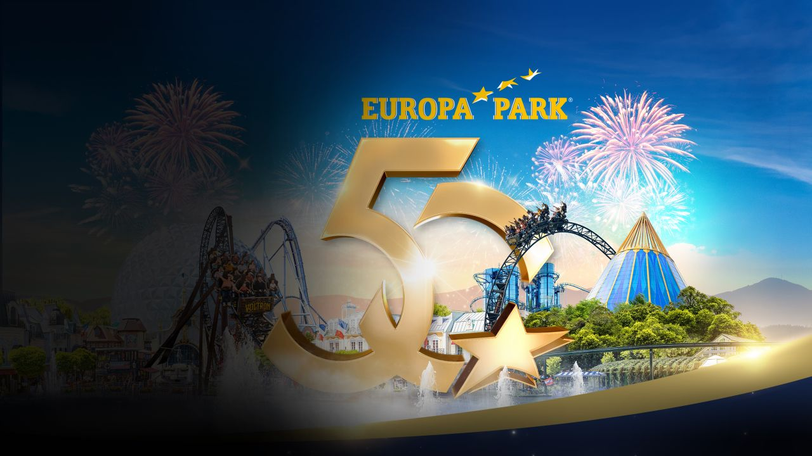
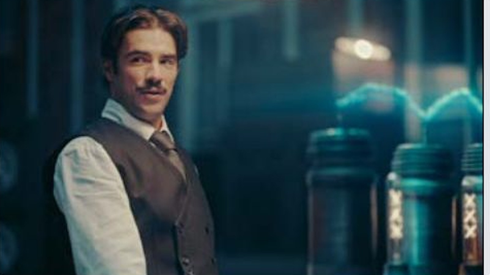
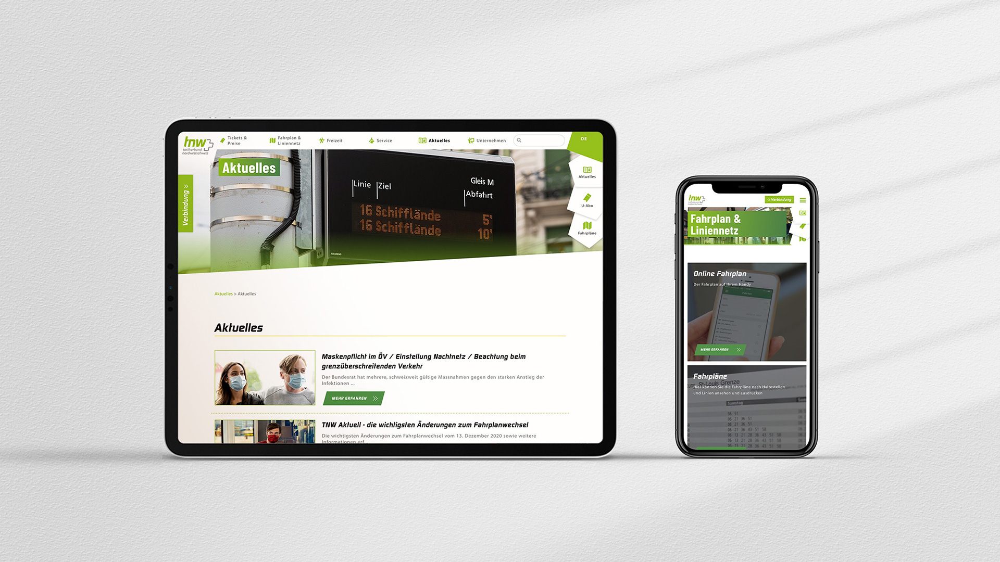

Film & Campaign
- Werbefilm und Produktfilm
- Commercials, Trailer und Social Cuts
- Regie, Produktion und Postproduktion
- Entertainment, Industrie und Healthcare
Creating moments not images.
Freiburg · Basel · DACH
Videograf & Filmemacher aus Freiburg. Regie, Kamera, Fotografie und Creative Direction.
Regie, Kamera, Fotografie und Art Direction für Marken, Healthcare und Entertainment zwischen Freiburg, Offenburg und Basel.
Ein visueller Prozess aus Idee, Look, Timing und Technik. Weniger Behauptung, mehr Richtung im Bild.
Commercials, Produktfilme, Trailer und Social Cuts mit Regie, Produktion und Post.
Werbefilm / Produktfilm / KampagneMarkenfotografie, Portraits und Bildserien für Kampagnen, Websites und Launches.
Portrait / Lifestyle / Brand imageryKamera, Licht und Set-Erfahrung für Produktionen, die einen klaren Look brauchen.
DoP / Kamera / LichtVisuelle Systeme, Layout, Branding und Creative Direction für konsistente Auftritte.
Design / Branding / Look developmentKI-Moodboards, Prototyping, Motion und Workflows für neue Bildprozesse.
AI / Motion / Virtual production
Tourtrailer zwischen Abenteuerkino, Special VFX, 3D und KI-gestützter Postproduktion.

Emotionale Markenkommunikation für eine der stärksten Entertainment-Marken Europas.

Ein rasanter TV-Spot zwischen Achterbahn, Storytelling und präziser visueller Inszenierung.

Webdesign, visuelle Ausarbeitung und bewegter Content für eine zugängliche Mobilitätsplattform aus Basel.

Eine kuratierte Auswahl aus Portrait, Reportage und Markenfotografie mit filmischer Handschrift.
Mehr als zehn Jahre zwischen Agentur, Entertainment, Healthcare, Design, Kamera und Postproduktion. Der Prozess bleibt schlank: verstehen, Look bauen, sauber ausführen.
Profil & Awards ansehenDer erste Schritt darf klein sein: Ziel, Timing, grober Rahmen und ein paar Referenzen reichen, um die richtige Richtung zu finden.
Projekt starten